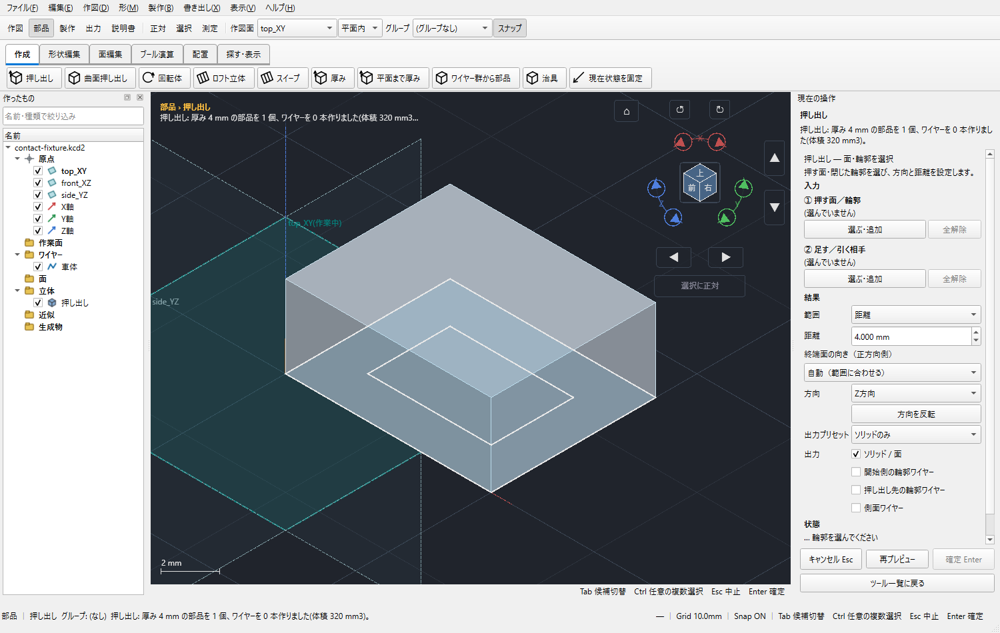
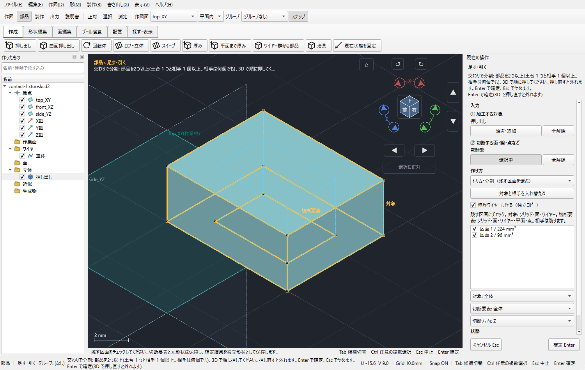
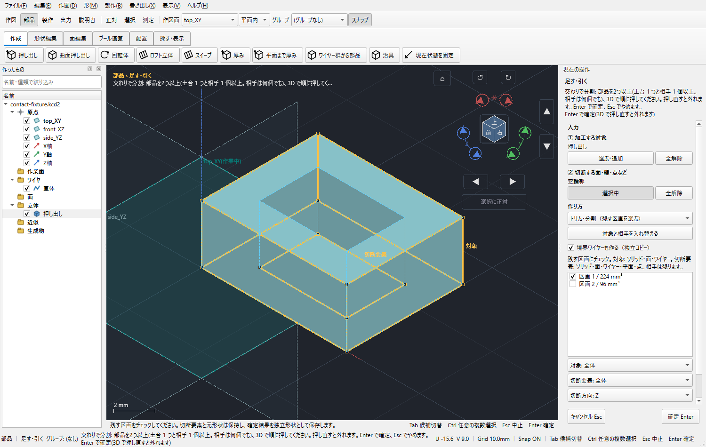
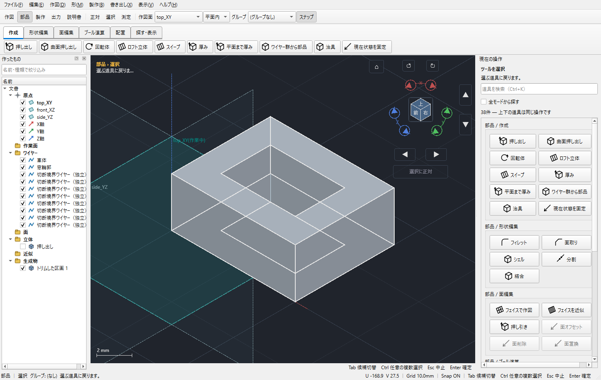
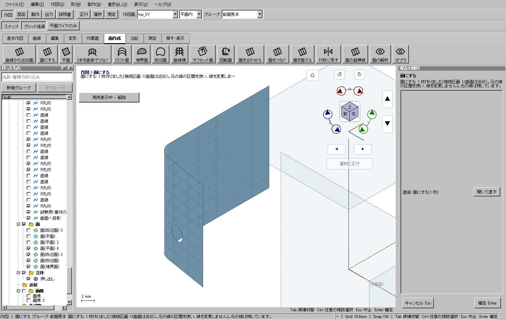

「部品 → ブール演算」の「めり込みを削る」または「交わりで分割」から始めます。右ペインの「作り方」で通常の引き算、重なり部分ごとの削除、残す区画の選択、交線ワイヤーだけの生成を切り替えられます。
①に車体など加工する対象、②に切断する面や窓の輪郭を入れます。各欄の「選ぶ」を押せば、その役割だけを選び直せます。作業中は計算の表示が出ます。確定前の取消では文書を変更しません。

選んだワイヤーを指定方向の両側へ伸ばした切断面で区切ります。前面から側面へ回り込む輪郭でも、すべて同じ方向に切ります。切断要素が車体を区切れない向きの場合は、方向を変えてください。

一覧で残す区画にチェックします。3Dビューで区画をクリックしても、残す・外すを切り替えられます。窓の中身を外し、車体側を残して「確定」を押します。


「ソリッドトリム（重なりごとに削る）」を選びます。重なりごとに「残す」「Aから削る」「Bから削る」「両方から削る」を指定できます。「引く（相手全体で削る）」は、相手全体を工具として対象から引く操作です。
| 加工する対象 | 切断要素と操作 |
|---|---|
| ソリッド | ソリッドとの重なり、横切る面・平面、指定方向に伸ばすワイヤーで区切ります。 |
| サーフェス・面 | 横切る面や、その面上のワイヤーで区切ります。元の面の継ぎ目を越えてつながる部分は同じ区画です。 |
| ソリッドの一つのフェイス | 3Dビューでフェイスの内側を選び、「対象: 選択したフェイスだけ」に切り替えます。結果は独立した面として保存します。切断要素側でも同じ指定ができます。 |
| ワイヤー | 交差する面・線や、ワイヤー上の点で区切ります。元から続いていた線分は、切断位置以外では一続きの区画です。 |
| 点・作業平面 | 切断位置の指定に使います。点自体には削る区画がありません。面やソリッドを点で切る場合、その点を通る指定法線の平面で区切ります。 |
ワイヤーを対象にした区画トリムでは「元の線を残す」が既定オフです。オフは元の線を削除し、オンは表示したまま保持します。依存する面・部品・寸法や同じ操作の出力も消す場合は、一覧と3Dの赤色を確認して承認します。取消なら何も変わりません。ソリッド・面を対象にした加工では従来どおり元を履歴に保持し、確定した対象を非表示にします。切断要素は残ります。面・ワイヤーを使った区画トリムの結果は固定された独立形状です。元の輪郭を変更した後は、トリムをやり直してください。開いた輪郭、交差しない切断要素、表示できない区画を、成功したことにはしません。
115面.kcd2の実画面による手順：パノラミック窓の穴付き面・厚み0.5 mmの部品
「面にする」で閉じた外周と閉じた窓輪郭を一緒に選びます。曲面上の輪郭が既存の面に一致する場合は、その面を保って窓の内側を除きます。穴の中の島は別の面になります。外周や窓が開いている場合は、表示される端点のずれを直してください。
曲面の投影輪郭は平面へ平らにしません。押し出す場合はツールを選び、①「押す面／輪郭」の「選ぶ」を押して輪郭の内側をクリックしてから、共通の押し出し方向を指定します。平面の輪郭とソリッドが重なる場合も、この欄を明示すれば輪郭を選べます。複数面にまたがるライトも同じ方向へ直線的に伸ばせます。


この例の確認用コピーは元のファイルを上書きせず別ファイルへ保存しています。境界が一致しない隣接面や、途中で開いている窓の線は、先に接続を整えてください。表示上だけ重なる線が3Dでも接続しているとは限りません。